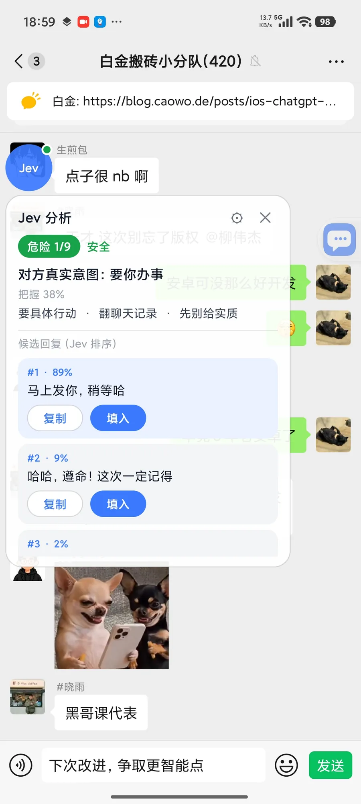

判断
TypeSafe Jev 判断模型一次给出：对方真实意图、危险等级 1–9、对方要什么、该不该马上回、最佳动作。约 1 秒，带把握度。
读懂对方、三条回复、一键填入。微信 / QQ / X 已跑通，飞书接入中。
adb install -r jev-assistant-v1.2-release.apk
程序只把回复填进输入框，从不自动发送，不碰转账 / 红包 / 收款。

已在这些 App 里跑通
大多数助手直接给你一段话。Jev 先判断这条消息到底是什么，再决定怎么回。
TypeSafe Jev 判断模型一次给出：对方真实意图、危险等级 1–9、对方要什么、该不该马上回、最佳动作。约 1 秒，带把握度。
生成模型（默认 DeepSeek）起草 3 条口语化回复，Jev 按「最合适」重新排序，并给出每条的占比，谁排第一有理由。
点一下，回复进输入框。程序只填不发，从不自动发送，也不碰转账、红包、收款。最后那一下永远是你按的。
同样是「帮你回消息」，差别在读得到多少、判不判断、以及谁按发送。
| 能力 | Jev 聊天助手 | 输入法 / App 自带 AI 回复 | 通用聊天机器人（复制粘贴） | 自动回复机器人 |
|---|---|---|---|---|
| 先判断再写 | ✓ | ✗ | 部分 | ✗ |
| 任意聊天 App 都能读 | ✓ | 部分 | ✗ | 部分 |
| 非侵入，不改客户端 | ✓ | ✓ | ✓ | ✗ |
| 发送由你按 | ✓ | ✓ | ✓ | ✗ |
| 知识库 + 联系人上下文 | ✓ | ✗ | 部分 | 部分 |
| 接口 / 模型自选 | ✓ | ✗ | ✗ | 部分 |
| 开源免费 | ✓ | ✗ | ✗ | 部分 |
对比按公开可得的常见形态归纳，不针对任何具体产品。
Built for everyday chats — 不是演示用的 demo。
判断、候选、排序、填入都在同一个内核里。新增一个 App 只需要实现一个几十行的适配器，其余全部复用。
不改任何 App 的安装包，不走它们的接口或账号，不读数据库。只用系统无障碍服务读「屏幕上正在显示的对话」。
本地维护笔记和联系人档案（关系、别名、备注）。分析时自动带上命中的知识和这个人的历史聊天，候选回复与知识库口径一致。联系人可跨 App 关联。
控件树里没有正文时自动截屏，用 ML Kit 中文离线识别，不上传图片、不需要 Google 服务。任何 App 都能在悬浮窗菜单里手动「截屏识别一次」。
判断 / 回复 / 视觉三路接口的地址、密钥、模型分别可填。内置 OpenRouter、TypeSafe 直连、DeepSeek 官方、通义兼容预设，各自一键连通测试。只填一把 OpenRouter 密钥就能用。
密钥只存在 App 私有空间。聊天内容只在分析那一刻发给你配置的模型接口，不落盘、不进日志。历史记录默认关闭，开了也只存本机。
真机实测为准，版本号是验证时的版本。
| 平台 | 状态 | 说明 |
|---|---|---|
| 微信 Android | 全链路 | 8.0.78 实测 |
| QQ Android | 全链路 | 9.3.50 实测 |
| X / Twitter 私信 | 全链路 | 12.25 实测，中文界面 |
| 飞书 / Lark | OCR 兜底 | 真机验证中 |
| 任意其它 App | 手动识别 | 悬浮窗菜单「截屏识别一次」 |
| 桌面端 / 网页 | 规划中 | — |
装包、填一把密钥、开三个权限。Android 11 及以上。
下载 APK 直接安装，Android 11+。也可以用 adb：
adb install -r jev-assistant-v1.2-release.apk
设置 → 接口 → 判断接口填 OpenRouter API Key，其余留空会自动继承。三路接口都能一键测连通。

无障碍、悬浮窗、自启动 + 省电无限制。小米 / HyperOS 上后两项必做，否则气泡会被冻掉。
从屏幕上的一条消息，到输入框里的一句话，中间只有这几步。
无障碍服务读当前对话；读不到就截屏 OCR
意图 · 危险等级 1–9 · 该不该马上回
3 条口语化候选回复
按「最合适」重排，给出占比
判断结论 + 三条候选，就在对话旁边
不发送，最后那一下由你按
不会。程序只把回复填进输入框，从不自动发送，也不碰转账、红包、收款。发不发、怎么改，都是你自己决定。
暂不支持。当前只有 Android App，需要 Android 11 及以上，因为实现依赖系统的无障碍服务。
规划中，还没有可用版本。定位是「全平台对话副驾」，Android 是第一站。
最少一把 OpenRouter API Key 就能跑起来：填在「判断接口」，回复和视觉接口留空会自动继承。也可以三路分开配，内置 OpenRouter、TypeSafe 直连、DeepSeek 官方、通义兼容预设，各自一键测连通。
只在分析那一刻发给你自己配置的模型接口，之后不落盘、不进日志。密钥只存在 App 私有空间。历史记录默认关闭，开了也只存在本机。OCR 走的是 ML Kit 中文离线识别，图片不上传。
问题、建议、想接一个新 App，都可以来找。

扫码关注，后台私信最直接。
群二维码 7 天过期，放在仓库 README 底部，那里会持续更新。
去 README 拿群二维码提 bug、报某个 App 读不到、提适配需求，走 Issues 最好跟踪。
提一个 Issue